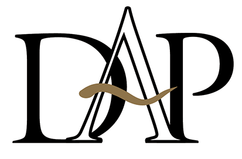

Terbuka untuk peluang kerja
Wahyu Muharik
Staf Pajak Mahasiswa S1 Teknik Informatika
Staf Pajak di PT Duta Abadi Primantara sejak Juni 2024, setelah 8 bulan magang di perusahaan yang sama. Menangani rekonsiliasi PPN Masukan, ekualisasi serta rekonsiliasi utang PPh Pasal 21, 23, dan 4 ayat (2), dan validasi transaksi pembelian ber-PPN. Terbiasa bekerja dengan Oracle E-Business Suite, Coretax, dan DJP Online.
Mahasiswa S1 Teknik Informatika Universitas Raharja yang sedang menyelesaikan skripsi, dengan dasar Rekayasa Perangkat Lunak sejak SMK. Menguasai dasar HTML, CSS, JavaScript, dan PHP. Pengalaman memakai ERP Oracle E-Business Suite di bagian pajak membantu saya memahami alur data dan kebutuhan pengguna di sisi bisnis.

- Posisi saat ini
- Staf PajakPT Duta Abadi Primantara
- Pengalaman pajak
- 2 tahun 5 bulanSebagai staf · + 8 bulan magang
- Pendidikan
- S1 Teknik InformatikaTahap skripsi · lulus 2027 (perkiraan)
- Domisili
- Kota TangerangBanten
01
Pengalaman
Klik setiap tugas untuk melihat penjelasannya.
-

Staf Pajak
-
Mencocokkan Faktur Pajak Masukan dengan pencatatan di pembukuan agar PPN Masukan yang dikreditkan sesuai.
-
Membandingkan objek pajak pada laporan keuangan dengan yang dilaporkan di SPT Masa untuk menemukan dan menjelaskan selisih.
-
Memastikan saldo utang PPh di buku besar sesuai dengan pajak yang dipotong dan disetor.
-
Memeriksa kelengkapan dan kesesuaian faktur, DPP, serta tarif PPN pada transaksi pembelian sebelum dicatat.
-
Menata arsip dokumen perpajakan agar mudah ditelusuri saat dibutuhkan, termasuk untuk keperluan pemeriksaan.
-
-
Magang Admin Pajak
PT Duta Abadi Primantara
- Mengelola berkas perpajakan PPh Pasal 21, 23, dan 4 ayat (2).
- Menyusun laporan ekualisasi pajak menggunakan Microsoft Excel.
- Membantu pekerjaan administrasi pajak lainnya.
-
Praktik Kerja Lapangan (PKL) · Administrasi Perkantoran
- Menginput data surat masuk dan surat keluar menggunakan Microsoft Excel.
- Membuat surat dinas, surat jalan, dan laporan alat tulis kantor menggunakan Microsoft Word.
- Membantu pekerjaan administrasi kantor lainnya.
02
Keahlian
Urutan dan label relevansi mengikuti posisi yang dipilih di atas.
-
Perpajakan
-
ERP
-
Aplikasi DJP
-
Microsoft Office
-
Pemrograman Dasar
Kode situs ini tersedia di GitHub.
03
Pendidikan
-
Perkiraan lulus 2027
Universitas Raharja
S1 Teknik Informatika
Tahap skripsi
-
2017 – 2020
SMK Negeri 4 Tangerang
Rekayasa Perangkat Lunak
04
Mari berdiskusi
Terbuka untuk posisi Staf Pajak maupun Junior Programmer. Silakan hubungi saya lewat email, WhatsApp, atau LinkedIn.